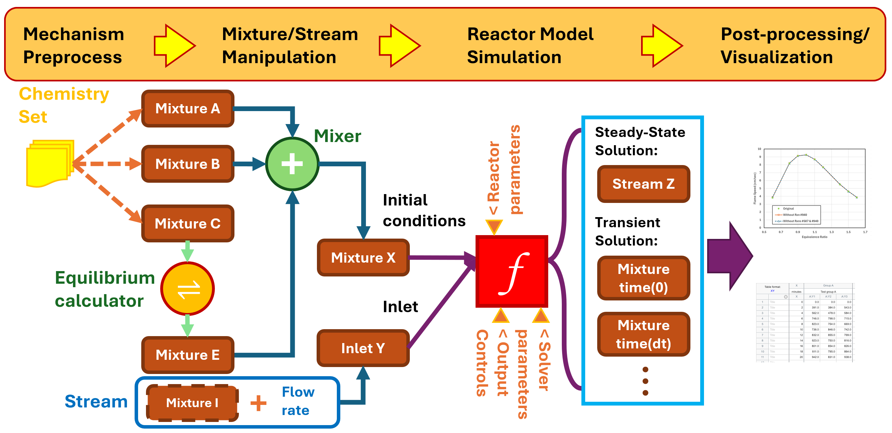

User guide#
Introduction#
PyChemkin inherits all Ansys Chemkin functionalities, providing Pythonic interfaces to Chemkin utilities and reactor models. In addition, PyChemkin introduces a hierarchy of four key objects to enhance user experiences within the Python framework:
Chemistry set: A collection of utilities that handle chemistry and species properties.
Mixture: A basic element representing a gas mixture that can be manipulated and transformed.
Stream: A mixture object with an additional property of mass flow rate.
Reactor: An instance of a Chemkin reactor model that transforms the initial mixture into another mixture.
The following figure shows PyChemkin’s mixture-centric concept. It illustrates the basic types of operations applicable to a mixture, which inherits all properties of a chemistry set. A mixture can be combined with a constraint, equilibrium (with constraints), or a process (by a reactor model).
{kind=link}

Workflow for a basic reactor model#
The workflow for setting up and running a basic reactor model in PyChemkin is the same as in the Ansys Chemkin GUI:
Create a chemistry set, which includes the mechanism, thermodynamic data, and/or transport data.
Preprocess the chemistry set.
Create a mixture or a stream based on the chemistry set.
Specify mixture or stream properties, such as temperature, pressure, volume (optional), and species composition.
Instantiate the reactor using the created mixture.
Set up the simulation:
Specify reactor properties not provided by the initial mixture or stream, such as heat loss rate to the surroundings and end time.
Specify solver parameters, such as tolerances and solver timestep size.
Specify saving controls, such as the solution saving interval and adaptive solution saving.
Run the simulation.
Process the solution.
Customize the output if necessary and generate plots.
Code example#
This code example computes the density of a mixture named air:
1 import os
2
3 # import PyChemkin
4 import ansys.chemkin.core as chemkin
5
6 # create a chemistry set for the GRI 3.0 mechanism in the data directory
7 mech_dir = os.path.join(chemkin.ansys_dir, "reaction", "data")
8 # set up mechanism file names
9 mech_file = os.path.join(mech_dir, "grimech30_chem.inp")
10 therm_file = os.path.join(mech_dir, "grimech30_thermo.dat")
11 tran_file = os.path.join(mech_dir, "grimech30_transport.dat")
12 # instantiate a chemistry set named 'GasMech'
13 GasMech = chemkin.Chemistry(
14 chem=mech_file, therm=therm_file, tran=tran_file, label="GRI 3.0"
15 )
16 # preprocess the chemistry set
17 status = GasMech.preprocess()
18 # check preprocess status
19 if status != 0:
20 # failed
21 print(f"Preprocessing: Error encountered. Code = {status:d}.")
22 print(f"See the summary file {GasMech.summaryfile} for details.")
23 exit()
24 # create a mixture named 'air' based on the 'GasMech' chemistry set
25 air = chemkin.Mixture(GasMech)
26 # set 'air' condition
27 # mixture pressure in [dynes/cm2]
28 air.pressure = 1.0 * chemkin.P_ATM
29 # mixture temperature in [K]
30 air.temperature = 300.0
31 # mixture composition in mole fractions
32 air.X = [("O2", 0.21), ("N2", 0.79)]
33 #
34 print(f"Pressure = {air.pressure/chemkin.P_ATM} [atm].")
35 print(f"Temperature = {air.temperature} [K].")
36 # print the 'air' composition in mass fractions
37 air.list_composition(mode="mass")
38 # get 'air' mixture density [g/cm3]
39 print(f"Mixture density = {air.RHO} [g/cm3].")
For more examples, see Examples.
Support#
Pythonic methods#
To get help within PyChemkin, use these pythonic methods:
ansys.chemkin.core.help(): Get general information about a topic, such asignition.ansys.chemkin.core.keywordhints(): Get the description and syntax of a reactor keyword.ansys.chemkin.core.phrasehints(): Get a list of reactor keywords related to a phrase.
Product training and documentation#
For product training and documentation, see these Ansys resources: